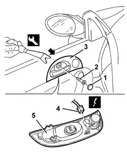

7005C44 INTERIOR HANDLE PANEL - R R
- Path
- Procedures > 70 FITTINGS > 7005 PASSENGER COMPARTMENT FRONT SIDE DOORS > 7005C FRONT LOCK CONTROLS > 7005C44 INTERIOR HANDLE PANEL - R R
- Kind
- repair procedure (removal / refitting; the operation number is the code)
- Applies to
- all engines; all production periods
- Interactive page
- https://sloeber94.github.io/elrnDB-aGt/en/#/125001774
Applies to: all engines; all production periods
 Removing
Removing
 Refitting
Refitting1. Remove the bolt cover.
2. Undo the bolt.
3. Gently remove the trim, disconnecting it from the internal retainers using the special tool, taking care not to damage the door panel.
 | Name | Country |
|---|---|---|
3 | Scraper blade | 1.823.015.000 |
4. Disconnect the electrical connection.
Name | Connector | |
|---|---|---|
4 | Driver's front tweeter speaker | See P45 DRIVER'S FRONT TWEETER SPEAKER |
Name | Connector | |
|---|---|---|
4 | Front passenger side tweeter speaker | See P46 FRONT PASSENGER SIDE TWEETER SPEAKER ( FRONT PASSENGER DOOR ) |
5. Recover the trim.
If necessary,
Op. 5570T92 FRONT TWEETER - R R

Applies to: all engines; all production periods
Refitting
RemovingCheck that the panel is not damaged.
If the tweeter has been removed,
Op. 5570T92 FRONT TWEETER - R R
Connect the electrical connection.
Name | Connector | |
|---|---|---|
- | Driver's front tweeter speaker | See P45 DRIVER'S FRONT TWEETER SPEAKER |
Name | Connector | |
|---|---|---|
- | Front passenger side tweeter speaker | See P46 FRONT PASSENGER SIDE TWEETER SPEAKER ( FRONT PASSENGER DOOR ) |
Position the trim and engage the inner retainers.
Tighten the bolt and fit the bolt cover.
Topics linked from this page (1)
Topics that link to this page (20)
- 5505B11 FRONT DOOR WIRING - R R
- 5570T90 FRONT SPEAKER - R R
- 5570T92 FRONT TWEETER - R R
- 5580T10 BOSE SOUND SYSTEM FRONT SPEAKER (ONE), LH OR RH - R R
- 7005A05 FRONT SIDE DOOR WATER GUARD PROTECTION R R OR ARRANGE
- 7005A28 FRONT SIDE DOOR LIMITER- REPAIR OR REPLACE
- 7005C11 FRONT SIDE DOOR OUTSIDE HANDLE R R
- 7005C15 FRONT SIDE DOOR LOCK BARREL (IN HANDLE) - R+R
- 7005C43 LINK CONNECTING FRONT SIDE DOOR BARRELS/CATCH - R+R
- 7005C53 INTERIOR OPENING HANDLE - R R
- 7005C55 FRONT SIDE DOOR INTERIOR OPENING RETURN DEVICE (WITH HANDLE) - R+R FOR REPAIR OR REPLACEMENT
- 7005D15 FRONT SIDE DOOR DESCENDING WINDOW GLASS R R
- 7005D25 FRONT DOOR WINDOW REAR GUIDE - R R
- 7005D26 FRONT SIDE DESCENDING WINDOW GLASS SCRAPER (OUTER) R R
- 7005E08 FRONT SIDE DOOR INTERIOR PANEL R R
- 7005M21 FRONT SIDE DOOR ELECTRICALLY OPERATED WINDOW - R R
- 7005M40 FRONT ELECTRIC WINDOW SYSTEM ECU - R+R FOLLOWING ELECTRICAL WIRING CHECK
- 7005N21 FRONT SIDE DOOR LOCK MOTOR-LOCK ASSEMBLEY-R R
- 7040E70 L/H OR R/H DOOR OPEN INDICATOR LIGHT (ONE) - R+R
- 7205E36 STRIPPING FRONT SIDE DOOR